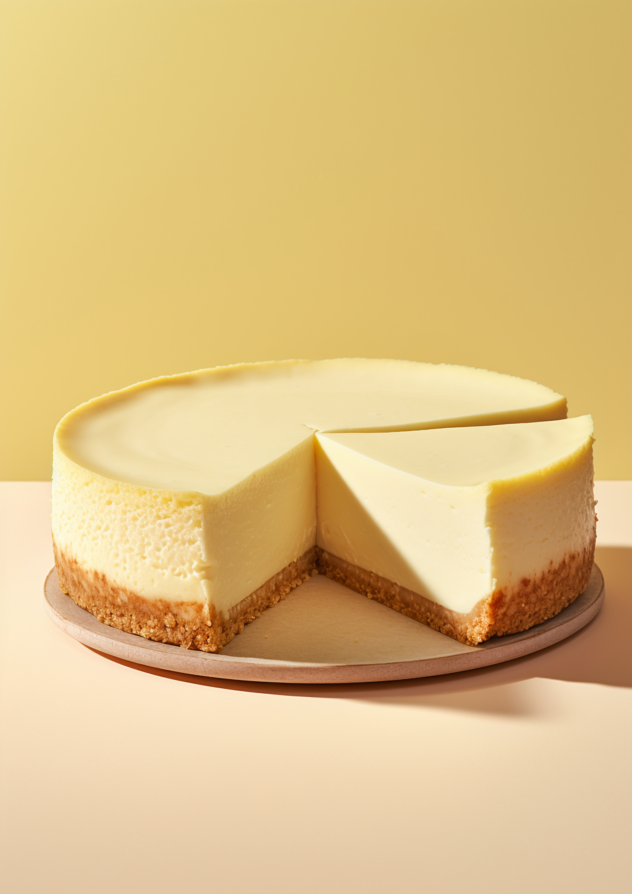

🍰 Cheesecake
Description:
Cheesecake is a creamy, decadent dessert loved
around the world. It features a buttery graham cracker
crust and a smooth cream cheese filling that can be baked or chilled. You
can top it with fruit compote, chocolate, or caramel for an indulgent
finish that suits any celebration.
Ingredients:
- 1 1/2 cups graham cracker crumbs
- 1/4 cup melted butter
- 24 oz cream cheese, softened
- 1 cup granulated sugar
- 1 tsp vanilla extract
- 3 large eggs
- 1 cup sour cream
- 1/4 cup all-purpose flour
Instructions:
-
Preheat your oven to 325°F (163°C). Grease a 9-inch springform pan.
-
In a medium bowl, combine graham cracker crumbs and melted butter. Press
the mixture firmly into the bottom of the prepared pan to form the
crust.
-
In a large mixing bowl, beat the softened cream cheese until smooth and
creamy.
-
Add the sugar and vanilla extract, and continue to beat until well
combined.
- Add the eggs one at a time, beating well after each addition.
-
Mix in the sour cream and flour until just combined. Be careful not to
overmix.
-
Pour the cream cheese mixture over the crust in the springform pan,
spreading it evenly.
-
Bake in the preheated oven for 55-70 minutes, or until the center is
almost set but still slightly jiggly.
-
Turn off the oven and leave the cheesecake inside with the door slightly
open for 1 hour to cool gradually.
-
Remove from the oven and let it cool completely at room temperature,
then refrigerate for at least 4 hours or overnight before serving.